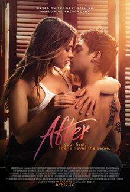

AFTER
In 2013, author Anna Todd posted the first chapters of a fanfiction titled After on fanfiction- and fiction-publishing website Wattpad.[3] The fanfiction's original storyline was loosely based on the boyband One Direction, and featured the band's members Harry Styles, Liam Payne and Zayn Malik, portrayed as students at Washington State University. The story followed Tessa Young, an "innocent good girl" who becomes involved in a relationship with "bad boy" Styles.
PG: 18 S, N, L, V2D and 3D SHOWING TIMES:
- 9h00am
- 13h00
- 18h00
- 11h00am
- 14h00
- 20h00
IMAX AND PRESTIGE SHOWING TIMES: